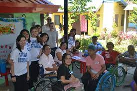
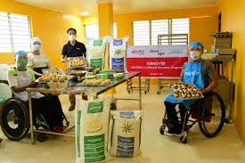

Home | Profile | Needs Assessment Resource Matching | Science | Gallery

The initial 27 physically challenged individuals who put out the proposal in 2010 are now in charge of the SAKADAB-GK village.
The original 27 people got to meet at the Our Lady of Victory - Training Center to talk about their shared goal for a neighborhood
where they could help and support one another. Mayor Inday Sarah Duterte of the City Government, Mr. Oscar Hidalgo, Gawad Kalinga,
and the Lions Club International were other participants in the project's conception and approval. The project also involves
Davao Light Corporation.

The SAKADAB foundation/advocacy aims to help physically challenged people support each other in their daily lives.
despite these dissabilities, they are able to work together as one to provide steady income, food, and basic needs
towards them. The SAKADAB advocacy envisions a future of sustainability and stability in the lives of the people
who live there. They hope that one day, the SAKADAB advocacy can spread and expand towards other parts of Davao
and make a profound impact on peoples lives.
Visit SAKADAB Social Media and other information!